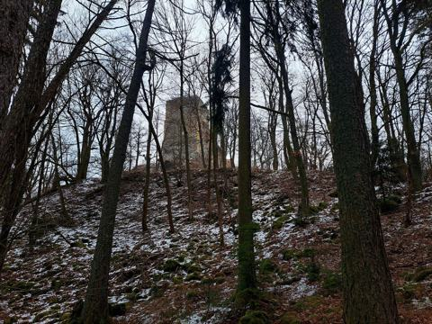
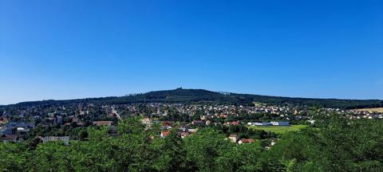
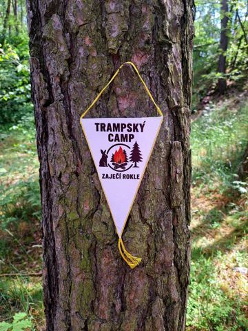
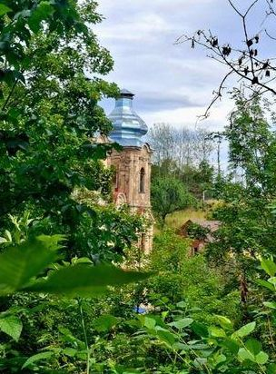

Potulka
Testovací verze. Administrace bude fungovat až na hostingu s PHP.
Outdoorový deník od roku 2015
Každý týden mizím mezi stromy. Potulky, houbaření, lesní stezky, ranní mlhy, jídlo z batohu a příběhy z míst, kde se dá na chvíli zapomenout na okolní svět.
BCT Survival je deník potulek, pochodů, houbaření a recenzí outdoorové výbavy, kterou od roku 2015 píše Mnich. Většina výprav vede do lesů kolem Starého Plzence a hradu Radyně, další na Toužimsko. Ke každé potulce najdete datum, místa, vyprávění a fotky.

Zřícenina hradu · 567 m n. m.
Hrad nad Starým Plzencem, který má BCT Survival i v logu. Stavět ho začal Karel IV. kolem roku 1353 a původně se jmenoval Karlskrone, tedy Karlova koruna. Pozor na záměnu: vesnice Radyně u Toužimi, kudy vede putování do Skoků, je úplně jiné místo.

Původní Plzeň
Tady stála první Plzeň. Hradiště na Hůrce zmiňuje kronikář Dětmar z Merseburku už roku 976. Když král Václav II. roku 1295 založil novou Plzeň na soutoku Mže a Radbuzy, zdejší hradiště se stalo Starou Plzní. Na Hůrce dodnes stojí románská rotunda sv. Petra a Pavla z konce 10. století.

Méně známé místo pod Radyní
Tichá rokle se skalami v lesích pod Radyní, kdysi trampský camp. Na stromě tu dodnes visí vlaječka „Trampský camp Zaječí rokle“. Na internetu o ní skoro nic nenajdete, o to častěji se objevuje v deníku: Mnich sem chodí vařit obědy, kontroluje tu kešku a odnáší odpadky, které tu po sobě nechali jiní.

Zaniklá obec a poutní místo
Kdysi „české Lurdy“ nad Žlutickou přehradou. Pouť začala podle legendy snem sedláka, kterému se zjevila Panna Maria. Roku 1748 sem přišlo přes 40 000 poutníků. Obec po válce zanikla, barokní kostel Navštívení Panny Marie z let 1736–1738 ale stojí dál a stará se o něj spolek Pod střechou. Mnich sem putuje pěšky z Toužimi.